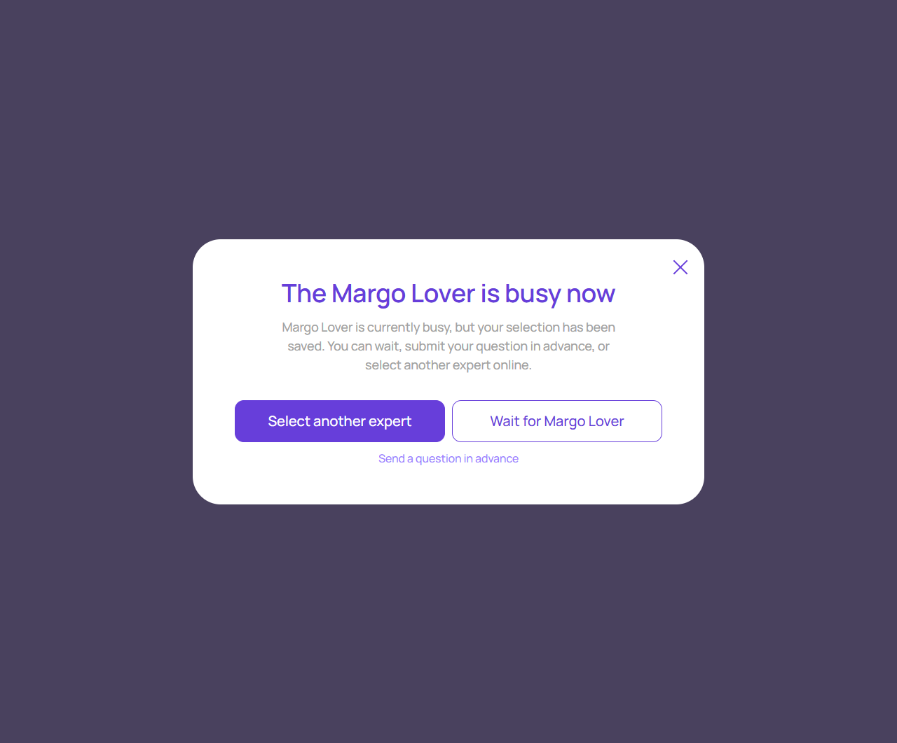

Эксперт занят
account/expert-unavailable.html
Объяснить временную недоступность и дать выбор.
| Когда открывается | Проверка доступности |
|---|---|
| Данные | expertId; подтвержденное состояние busy; возможные действия. |
| Сценарий | Выбрать другого → picker; вопрос заранее → сохраненный диалог. |
| Переходы | Подбор эксперта · Вопрос перед консультацией |
Не создавать фальшивую очередь или обещание срока, если сервер их не рассчитывает.
Общая и предметная логика. Снимки и подписи элементов — исходная редакция макета; поздние уточнения ТЗ имеют приоритет в своей области. Это не проверка текущего сайта.
Сопоставление с AskNebula
Существующие наблюдения 07–09.10.2026, без повторной проверки в этой передаче.
Нужна отдельная сверка соответствующего экрана/состояния референса. Отсутствие аналога не установлено.
Состояние 1280 · 1280 × 1062


Элементы и ожидаемые действия
| Элемент | Название в макете | Действие | Ожидаемый результат |
|---|
Состояние 390 · 390 × 900

Элементы и ожидаемые действия
| Элемент | Название в макете | Действие | Ожидаемый результат |
|---|